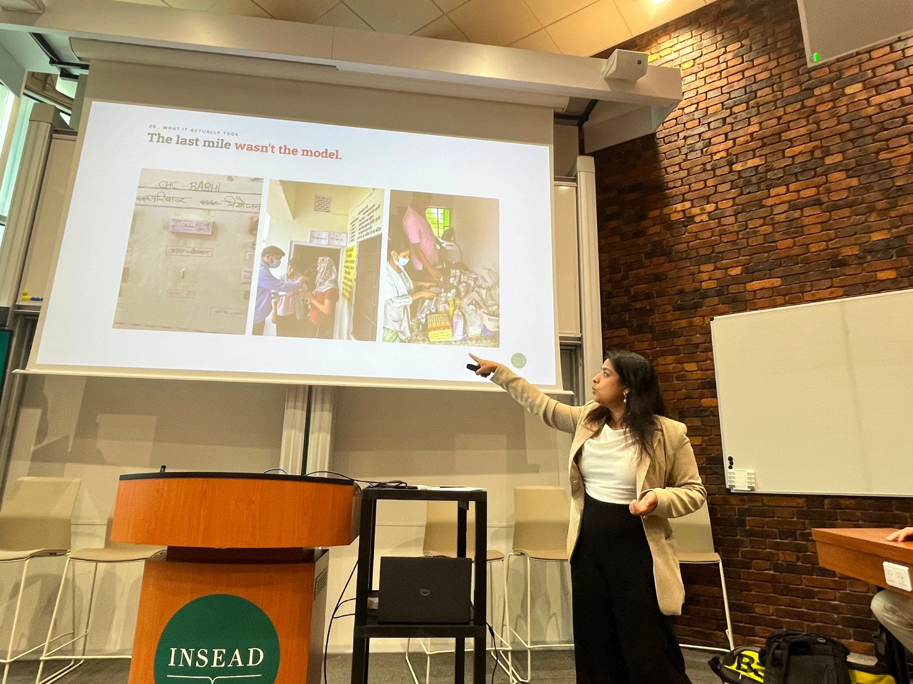
Hi, I’m Sanya!
Life has given me the roles of corporate banker, AI strategist, investor, thought leader and founder. I am an engineer by training, currently pursuing my MBA at INSEAD, France.
Six years of constant learning and exploration across industries and geographies, bringing people, institutions and technology together to turn ideas into scalable impact.
 IndiaIndia · Academic Merit Scholarship
IndiaIndia · Academic Merit Scholarshipto 2020
 Singapore
Singapore  France
France  UAE
UAEINSEAD Endowed Scholarship · 95th percentile GMAT Quant
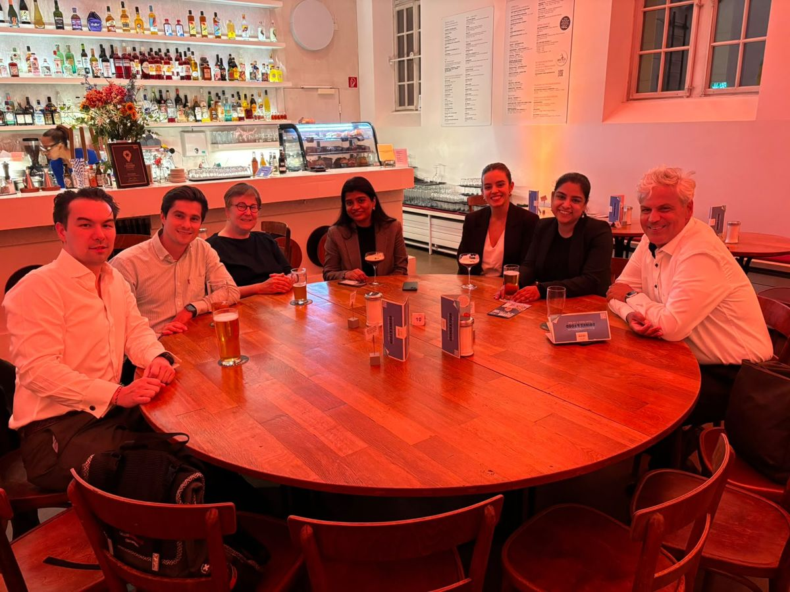
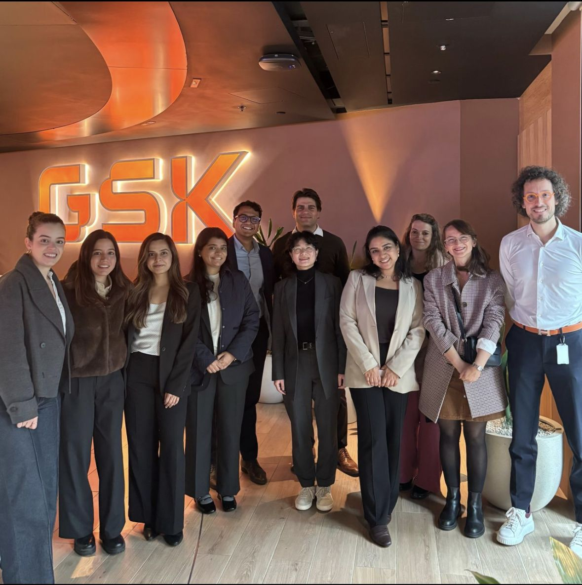
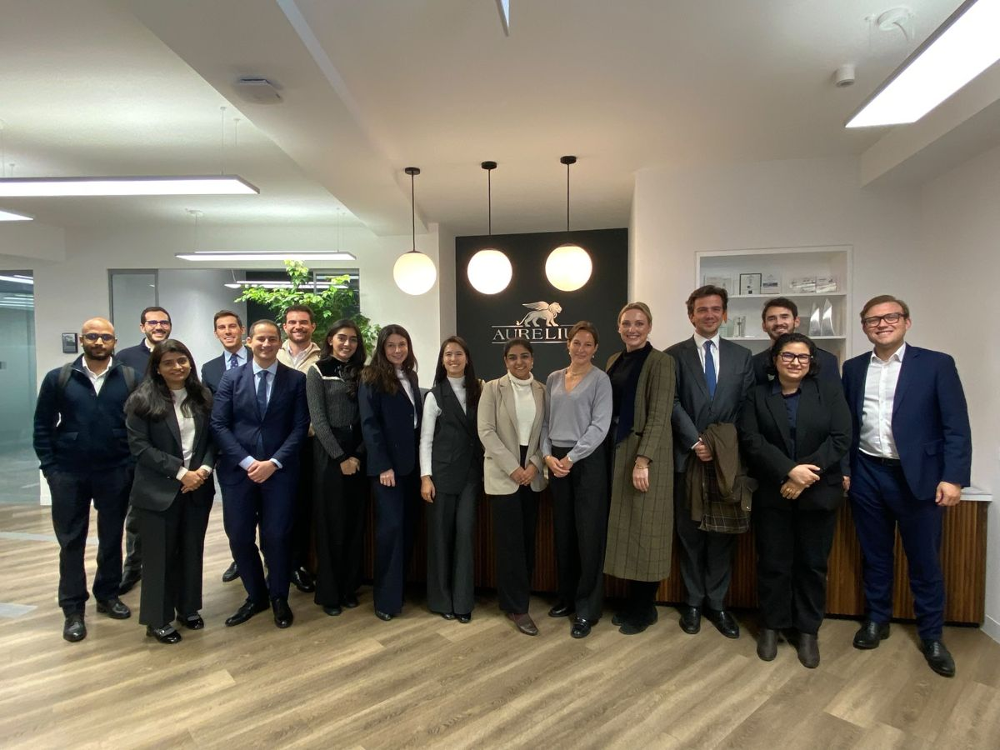
Hover over a milestone to see the work. Click to keep it open.
IndiaMy first step into the corporate world, at one of the world’s leading banks.
I learned to build financial models, read financial statements and map the value chains of different industries. I benchmarked working capital, and learned to communicate clearly with bankers across regions. I presented my final thesis on the online travel industry and received a full time offer.
India · Global Advisory, EMEA and Asiato 2022
Then I advised global companies on their biggest financial decisions.
- Treasury advisoryAdvised Fortune 500 clients on treasury transformation, cash management, liquidity optimisation and post merger treasury integration.
- Live dealsLed deal engagements on treasury structure, bank and account rationalisation and corporate actions (M&A, spin offs, pre and post IPO), delivering 60%+ savings through accounts rationalisation.
- Valuation modelsBuilt cash and working capital benchmarking, transaction and convert to book analyses, saving a major aviation client ~US$50MM a year.
- Financial analysisCo created ROIC, FX and liquidity models that surfaced VAM, POBO and FX cost savings for C suite clients.
- Industry researchConducted treasury KPI and capital efficiency benchmarking across Healthcare, Consumer and Retail, TMT, DI and EPRM.
- Industry PitchBooksCreated sector decks for airlines, pharmaceuticals and shipping and logistics, covering macro trends, payments and regulation.
- ESG analysisAdvised client management teams on ESG transformation as part of strategic decision making.
Key projects
- Authored the S&P 1500 and Healthcare and Pharmaceuticals Working Capital Indexes, positioning the team as experts on treasury of the future.
- Published J.P. Morgan’s first treasury digital transformation plan for the DI sector.
- Collaborated with sales leadership on an advisory content library and treasury benchmarking dashboard, engaging 200+ clients.
- Executed a US$3MM+ plan for digital wallet adoption across markets for a leading global subscription media company.
Indiato 2023
My move from a global bank to on ground implementation, for impact at scale.
- Product design Designed Samiksha, a classroom monitoring app for 6,000 government schools in Haryana and Himachal Pradesh, and the user flows of a WhatsApp bot on the national DIKSHA channel.
- Tech implementation Took Samiksha live with engineers, data analysts and state officials: mentor evaluations, feedback reports and a real time dashboard for state reviews.
- Digital transformation With the National Informatics Centre, unified scattered citizen helplines into one grievance platform that routed requests to the right ministry, with analytics on engagement and resolution.
India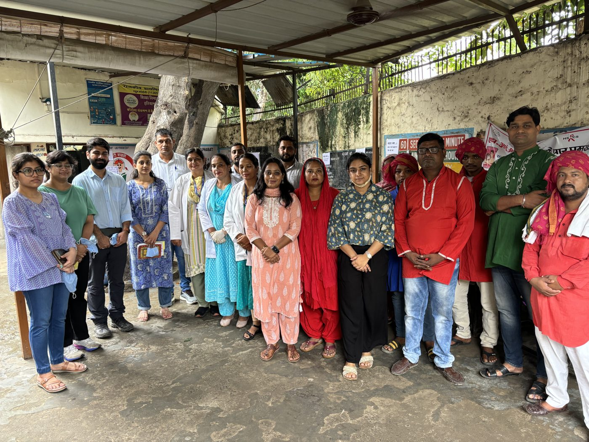
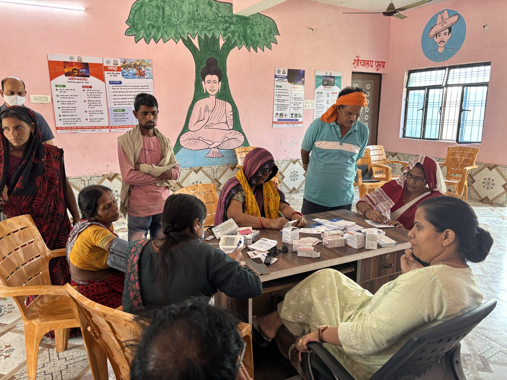
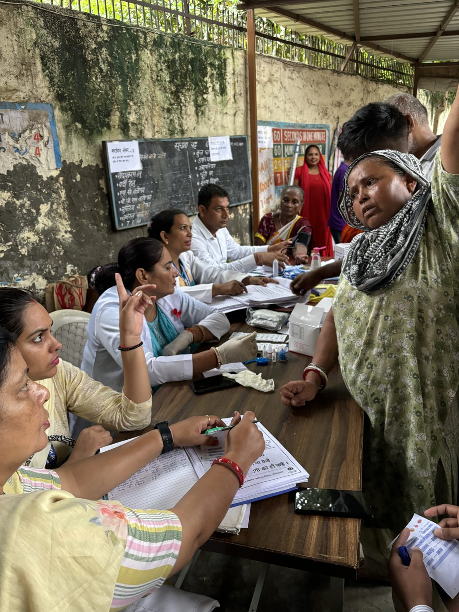
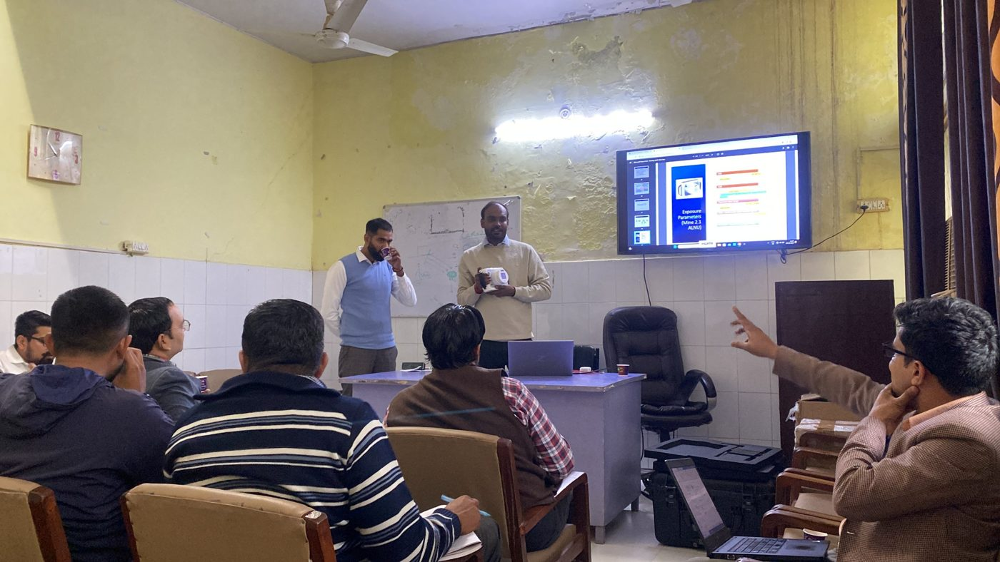
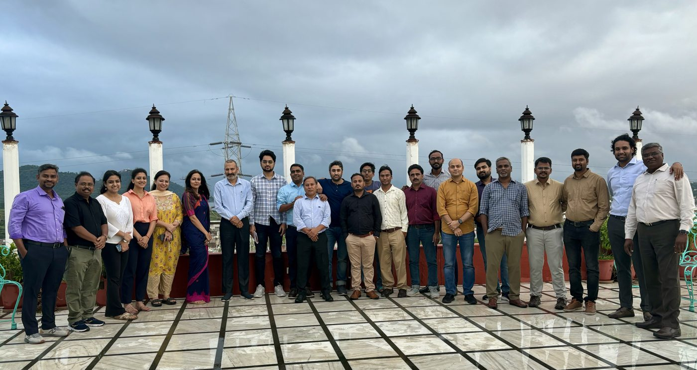
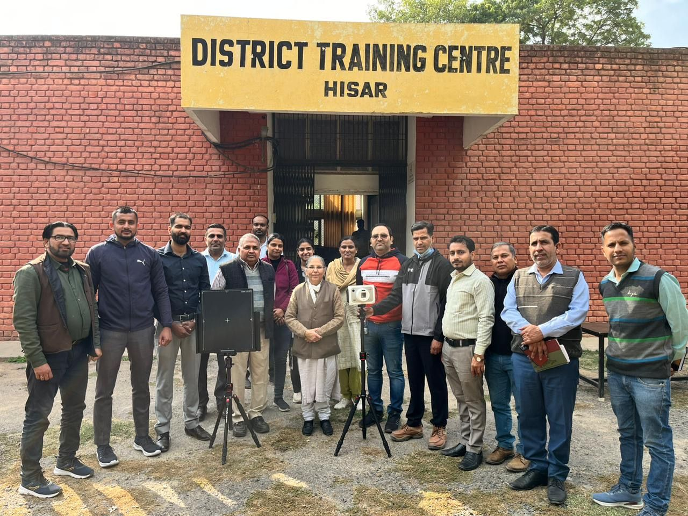
to 2025
I led go to market for India’s first AI assisted, nation level health screening programme.
- GTM and market adoption Shaped the market for AI X ray, from diligence on 15+ vendors to procurement and adoption across states.
- AI strategy and deployment Set field requirements for an offline AI, validated it on about 1M patient data points, and chose 200 sites on burden, power and connectivity.
- Platform conceptualisation Partnered with the AI vendor to design and launch the country’s first Radiology Information System for patient data management, adopted by 90% of health centres.
- Team leadership and capacity building Led a field team and ran 15 state trainings for 300+ frontline staff.
- Global partnerships Partnered with WHO and international pharma companies on a TB drug landscape, combining sales data and primary research to map 950+ distribution points and raise stock availability by 35%.
- Investment thesis and capital structuring Developed the investment thesis and capital structure for a US$900K World Bank health workforce programme bid, designing financing instruments to mobilise US$20M across 7 states.
SingaporeAfter deploying capital on the ground, I learned to allocate it as an investor.
- Investment theses Built fund level healthcare theses on market size, competitive position and risk and return.
- Market assessments Assessed healthcare opportunities across South Asia, Southeast Asia and Sub Saharan Africa against climate and access criteria.
United Arab EmiratesThen I built an investment team’s diligence engine out of AI agents.
- AI agent workflow design Turned the founder’s screening, diligence and memo criteria into seven specialist agents, from sourcing to the investment memo.
- Data orchestration Structured company, financial and market data so every target was screened the same way.
- Investment underwriting Orchestrated the firm’s expansion into UK specialty pharmaceuticals, underwriting a platform deal end to end: LBO build, debt schedule, precedent transaction benchmarking and exit sensitivities, presenting a 15% IRR investment case.
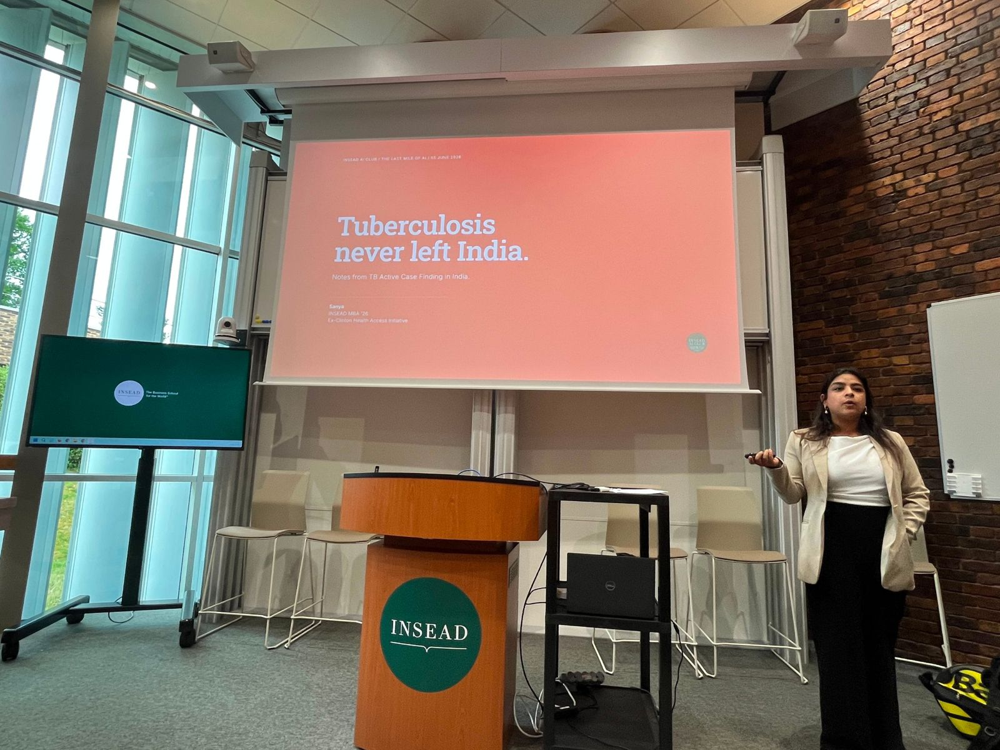
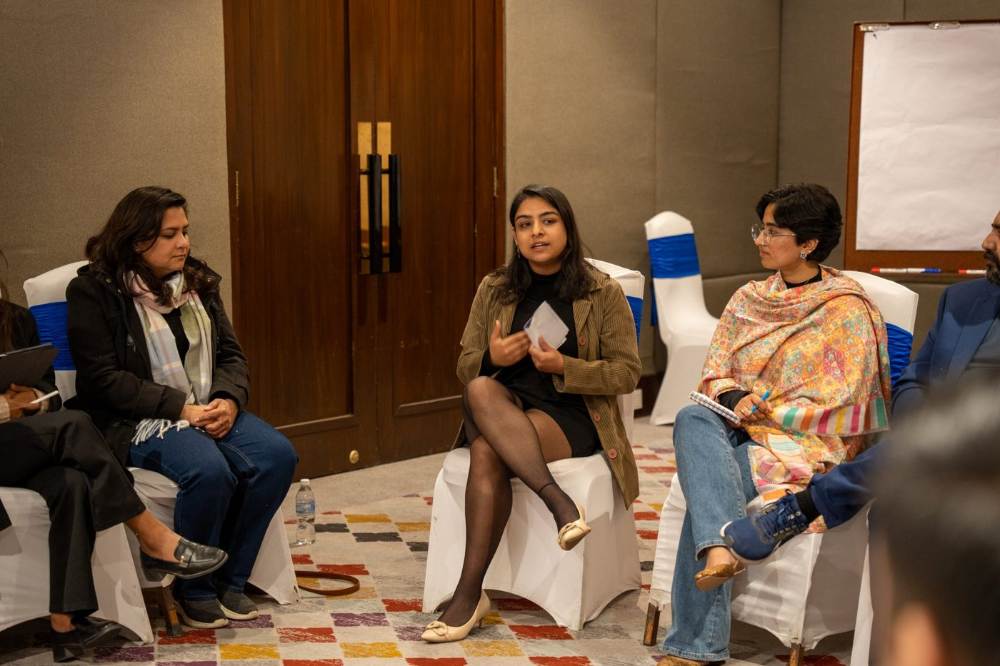
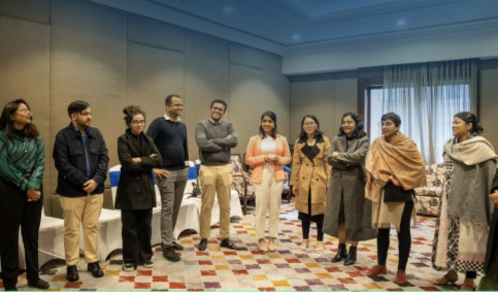
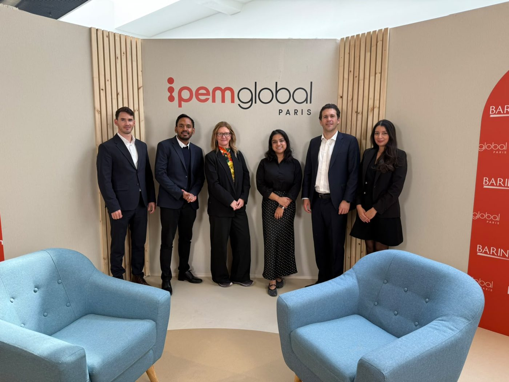
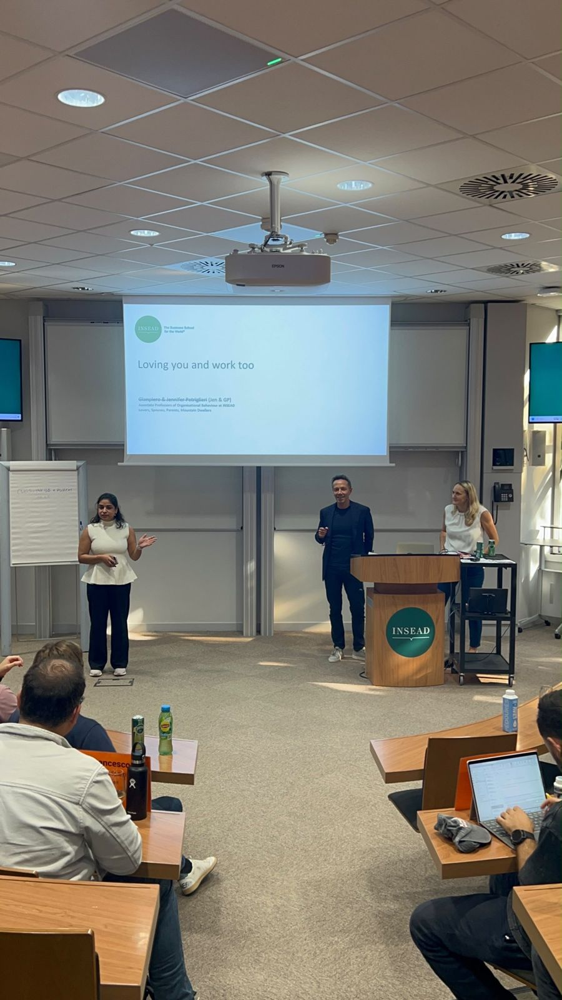
Positions of responsibility
Published abstracts
Initiatives and leadership activities
Beyond work


PANKH
India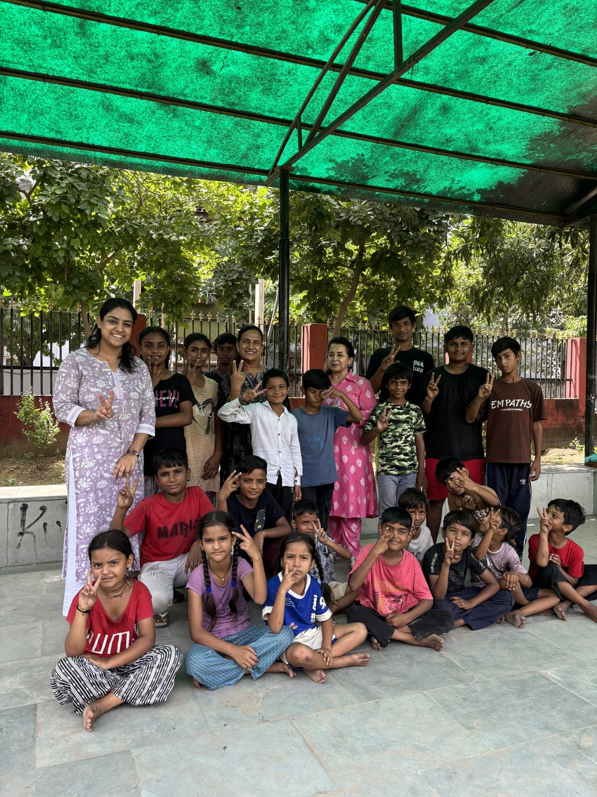
I co founded a non profit. PANKH, meaning wings, began in 2017 by teaching one small group of students. Today it helps girls, young people and families build skills, stay in education and get through hard times.
- Skills Stitching, computer literacy, driving, painting and beautician training.
- Education School and undergraduate merit scholarships, laptops and startup funding, including sponsoring an engineering degree.
- Support drives School bags, books, uniforms, winter clothing, rations, sanitary napkins and medicines.
ChAIn Reaction
Helping women build in AI, from a first idea to first customers. Our Founder’s Field Guide maps seven stages of building, from purpose to launch, with the questions, signals and decisions at each, drawn from conversations with women founders, operators and investors in San Francisco, London and Bengaluru.
A builder turning complex AI into deployable programmes.
Here is what I understand about Chanakya’s work, and where I have already done it.
What I understand about Chanakya
Sources are listed at the bottom of the page.
Who it serves
A self contained vertical for national security and institutions of national importance: the armed forces, intelligence agencies, financial regulators and central ministries.
What it ships
Sarvam’s own stack, deployed on premise in air gapped environments: 30B and 105B models trained from scratch in India, multimodal ingestion and production agentic workflows.
Proof it works
Sarvam already runs voice agents for Aadhaar inside UIDAI’s air gapped, on premise infrastructure, with UIDAI owning the solution.
Where defence is heading
A five year framework with HQ Integrated Defence Staff covers AI across the Army, Navy and Air Force, with humans retaining oversight of operational decisions.
How defence buys
The draft Defence Acquisition Procedure 2026 adds fast track protocols for technologies like AI, where a two to three year buying cycle means obsolescence.
So the hard part is
Not the model. It is turning a command’s problem into a scoped, procurable, deployable programme, then making it stick with users who were not in the room.
Why my experience travels to defence
I have not worked in defence. But the constraints that make defence AI hard are ones I have already worked under.
No internet at the edge
Systems must work disconnected, on limited hardware.
Data cannot leave the building
Sensitive records stay inside the institution.
A long chain of command
Decisions move from headquarters to the field and back.
Formal, slow procurement
Evidence and trials before anything is bought.
Humans decide, AI supports
Consequential calls keep a person in the loop.
Plan for the worst day
Reliability and fallbacks are part of the design.
What the role asks for, and my evidence
Situation, action, result.
- Situation
- TB screening had to reach places with no radiologist, unreliable power and patchy signal.
- Action
- Benchmarked 15+ AI vendors, shortlisted 200 sites on burden, power, connectivity, budget and terrain, coordinated vendors and doctors, and trained 300+ staff across 15 states.
- Result
- 2M+ people screened, about half of them women, at about 4x the positive yield.
- Situation
- A government approved AI chest X ray tool worked on paper but was losing patients in practice.
- Action
- Spent a day in a district hospital documenting every step, from registration to report.
- Result
- Five specific fixes for the developer: patient ID tagging, automated upload and alerts, faster turnaround, action protocols and a downtime plan.
- Situation
- A health centre on our deployment list could not keep the power on.
- Action
- Told state counterparts early that sites without reliable power were not ready, and rebuilt the shortlist around power readiness and post warranty ownership. todo: confirm
- Result
- Devices went where they could actually run, and the partnership held.
- Situation
- A new investment platform needed diligence capacity and had no analyst bench.
- Action
- Turned screening, diligence and memo criteria into seven specialist agents, each owning one step.
- Result
- A 60+ company universe screened and 50+ targets sourced across seven sub sectors.
- Situation
- A state education department needed reliable classroom data from 6,000 schools.
- Action
- As product manager, aligned officials, engineers and data analysts on Samiksha and its WhatsApp bot.
- Result
- 90% teacher adoption and 10% fewer data errors, then handed over to the department.
- Situation
- Public health buyers and global finance teams both decide slowly, by committee, on evidence.
- Action
- Built relationships from national programme leads and WHO to district officers; advised client management teams through 30+ live deals.
- Result
- A benchmark used with 200+ clients, and programme evidence that fed public procurement of AI X ray units.
The engagement, end to end
Each stage of the role, and where I have done it.
| Stage | Where I have done it |
|---|---|
| Account mapping and outreach | Mapped ministry, state, medical and vendor stakeholders for a national AI rollout; opened conversations with 200+ corporate clients. |
| PoC scoping | Benchmarked 15+ AI vendors before anything was bought; validated the offline algorithm on about 1M patient data points. |
| Problems into engineering briefs | A hospital workflow audit that became five fixes for an AI developer; user flows for a WhatsApp bot. |
| Delivery against commitments | 5,000+ AI X ray units deployed; Samiksha live across 6,000 schools. |
| Handover and adoption | 300+ field staff trained in 15 states; 90% adoption; operations handed to government teams. |
| Ground intelligence back to the vertical | Teacher journey mapping and district data frameworks that told leadership what was really happening. |
How I would start
Days 1 to 30
Learn the stack hands on. Shadow Strategic Deployment Engineers on a live engagement. Read every past scoping document. Learn the procurement routes our clients use.
Days 31 to 60
Own the delivery tracker and client rhythm for one engagement. Run one PoC scoping end to end with an engineer beside me.
Days 61 to 90
Bring the vertical a first note on what clients keep asking for that we do not yet have, and help map the next accounts.
A few questions
The things I would ask if I were hiring me.
You just did an MBA in France. Why come back for this?
Because my work started in India and never really left. I learned public systems from the inside, at state and national level, by embedding myself in them. I grew up watching my mother work as a doctor and social activist across India, so I knew early what it means when a system does or does not reach people. INSEAD, across Singapore and France, gave me a global view and a sharper toolkit. Chanakya is where I want to use both.
You have not worked in defence. Why trust you with defence clients?
What I bring is the pattern: hierarchical institutions, long procurement, high stakes, disconnected environments, and users who were not in the room when the system was bought. I have worked in that pattern in public health and education. I would close the domain gap quickly: learn the procurement framework, listen more than I speak at first, and lean on the team’s experience.
How technical are you?
Engineer by training. I have set field requirements for an AI algorithm and validated it before scale, designed a WhatsApp bot’s user flows, audited an AI workflow inside a hospital, and built a seven agent pipeline myself. I am not a model researcher, and I will not pretend to be one in front of a client.
Why engagement, and not product or engineering?
My strength is the space between the client and the builders: understanding the operational problem, writing the brief, protecting the timeline, and staying through adoption.
Why Delhi?
It is where Chanakya’s clients are. I have lived and worked there, and my family is a few hours away in Jaipur. On site work and travel at short notice suit me.
Let’s talk.
If you are building AI that India’s institutions can trust, I would like to help carry it the last mile.